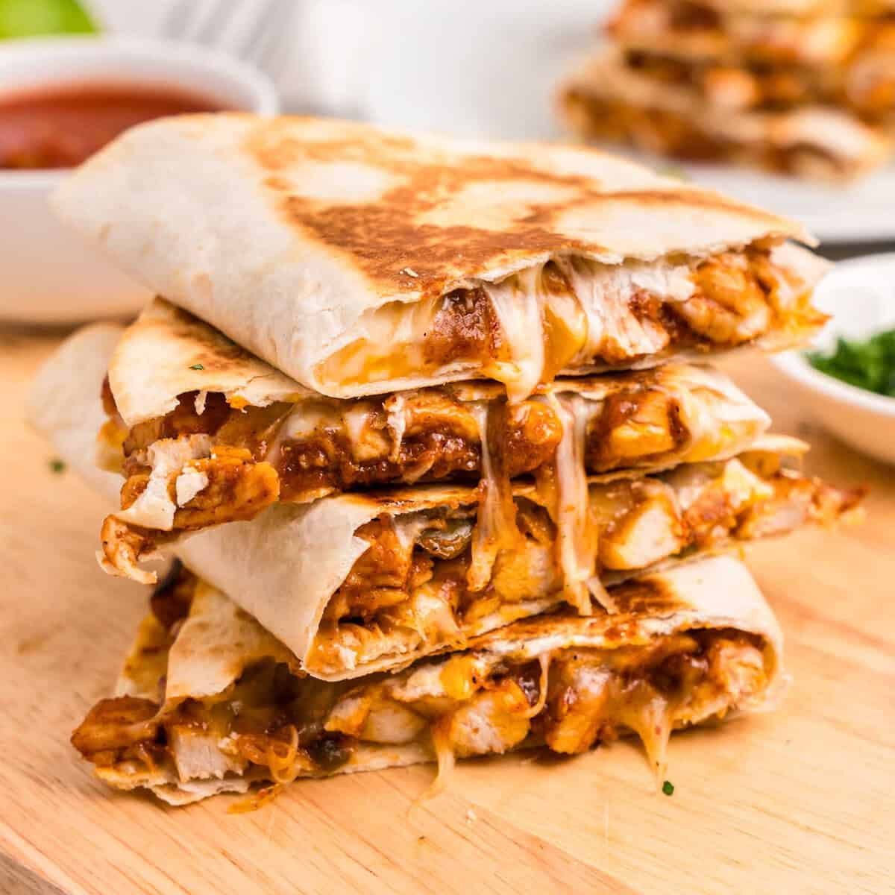

Cheesy Chicken Quesadillas

Ingredients
- 1 lb boneless, skinless chicken breasts or thighs
- 4 large flour tortillas
- 2 cups shredded Monterey Jack or Mexican-blend cheese
- 1/2 onion, thinly sliced
- 1 bell pepper, thinly sliced
- 2 tbsp olive oil
- 1 tsp chili powder
- 1 tsp cumin
- 1/2 tsp garlic powder
- 1/2 tsp salt, 1/4 tsp black pepper
Toppings
- Sour cream
- Salsa or pico de gallo
- Guacamole
- Pickled jalapenos
- Chopped cilantro
- Lime wedges
Steps
- Toss the chicken with 1 tbsp oil, chili powder, cumin, garlic powder, salt, and pepper.
- Cook the chicken in a skillet over medium-high heat for 5–7 minutes per side, until it reaches 165°F. Rest it 5 minutes, then slice or shred it.
- In the same pan, cook the onion and pepper in the remaining oil for about 5 minutes, until soft and a little browned.
- Lay out the tortillas. Sprinkle cheese over half of each one, add the chicken and veggies, top with more cheese, and fold it over.
- Wipe out the pan and cook the quesadillas over medium heat for 2–3 minutes per side, until golden and the cheese is fully melted. Don't rush it with high heat or the outside burns before the cheese melts.
- Let them sit for a minute so the cheese sets, then cut into wedges and serve with your toppings.
Nutrition Facts - Per Quesadilla
| Calories | Protein | Fat | Carbs | Fiber | Sodium |
|---|---|---|---|---|---|
| 610 | 45g | 32g | 36g | 3g | 1050mg |